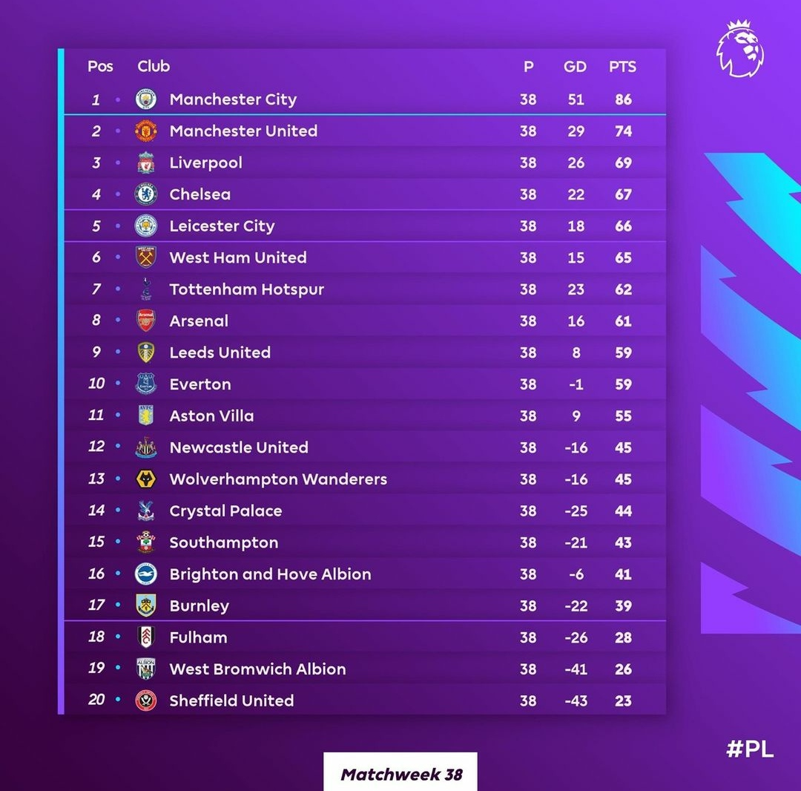
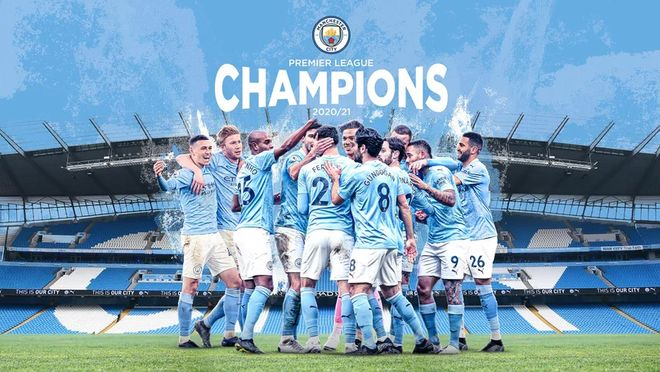

¿Qué es la Premier League?
La Premier League es la liga de primera división que se juega en Inglaterra, para mi gusto es la liga con mayor nivel, ya que tiene equipos como el Manchester City, Liverpool, Chelsea, Manchester United, Arsenal, y muchos más equipos de gran categoría. Al igual que en la Liga Santander, los 4 mejores equipos de esta se clasifican para jugar Champions League, y al haber tantos equipos de gran categoría esto va variando casi todos los años.
En la siguiente imagen puedes ver la clasificación final de la Premier League, con Fulham, West Bromwich Albion y Sheffield United como descendidos; Manchester City, Manchester United, Liverpool y Chelsea clasificados a Champions League; Leicester y West Ham jugarán Europa League; Tottenham Hotspur se clasifica para UEFA Conference League. El equipo revolución de esta temporada sin duda es el Leeds United, que recién ascendido ha finalizado en la 9ª posición.
Manchester City campeón 2020/21
El Manchester City se ha proclamado ya campeón de la Premier League en la temporada 2020/21, tras la victoria del Leicester City por 1-2 al Manchester United, que deja sin opción alguna de adelantar al City matemáticamente. El Mancheser City cuenta ya con esta con 7 trofeos de la Premier League, y los que quedán por conseguir porque este equipo va a dar guerra muchos años más.
Máximos goleadores
Los máximos goleadores de la Premier League son los siguientes:
1. Alan Shearer (Inglaterra) con 260 goles en 441 partidos.
2. Wayne Rooney (Inglaterra) con 208 goles en 494 partidos.
3. Andy Cole (Inglaterra) con 187 goles en 415 partidos.
4. Sergio Agüero (Argentina) con 182 goles en 271 partidos.
5. Frank Lampard (Inglaterra) con 177 goles en 609 partidos.
El más destacable en todo esto es Agüero, que siendo el único que lleva menos de 300 partidos lleva ya 182 goles, y todo esto en tan solo 1 equipo de la Premier, el Manchester City.
Máximos asistentes
Los máximos asistentes de la Premier League son los siguientes:
1. Ryan Giggs (Gales) con 162 asistencias en 632 partidos.
2. Cesc Fábregas (España) con 111 asistencias en 250 partidos.
3. Wayne Rooney (Inglaterra) con 103 asistencias en 494 partidos.
4. Frank Lampard (Inglaterra) con 102 asistencias en 609 partidos.
5. Dennis Bergkamp (Países Bajos) con 94 asistencias en 315 partidos.
Lo más destacable en esto es que tanto Wayne Rooney (208 goles y 103 asistencias) como Frank Lampard (177 goles y 102 asistencias) entran en el top 5 de los máximos goleadores y máximos asistentes de la Premier League.